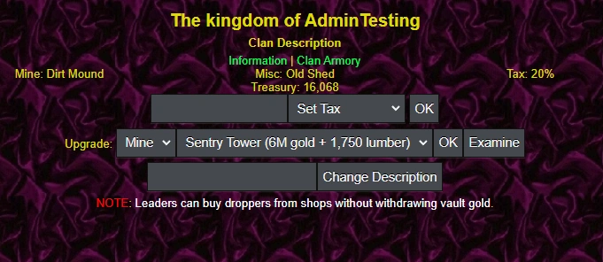

Overview

This page will cover everything related to making a Kingdom, related to Clans.
To start, you must be a clan leader of a clan. You then go to Xandor Kingdoms, find an available kingdom location and select "Settle Land". New options will appear for you (if not, select "Refresh" on the directional pad).
There will be 2 tabs available to you:
- Information
- Clan Armory
Information
This displays all the interactions you can do within a clan as a leader. It displays your current Tax, Misc, Mine, how much Gold your clan has, and various options to change all of that.
Set Tax
You can tax all clan members (including leaders) up to 99% of their gold per monster kill and it goes straight into the clan treasury, with one exception.
If you're in a pk zone (a zone where you can choose between finding monsters or players), then the max gold you can tax becomes 25%.
Every time the clan tax is changed, a message will display in your clan chat for all to see.
Upgrades
There are 2 building upgrades you can purchase for all clan members to benefit from: Clan Mine and Clan Misc.
Clan Mine
A Clan mine adds an extra drop chance when killing monsters that will give you a gem drop. It shares a drop pool with gems, shadows, and purses - meaning you can only get 1 of these per kill.
Clan mines are a much more rare drop than the other options however, starting out a 1/5000 chance of happening. Upgrading your clan mine rewards you with better gem options, such as targeting specific gem types.
By default, you start with a Dirt Mound - it does absolutely nothing for you! You spend gold to upgrade your clan mine, which benefits everyone in the clan.
For example, if the mine drops grade 2,3,4 - that means you will get a grade 2,3,4 from the mine at random, even if you're in a zone that drops none of those!
The in-game command to view clan mines is /clanmine or /cm1 for short. Unlike regular gem drops, clan mines are not weighted at all and each gem has an equal chance of dropping.
Note: You must have a clan tax of 5% or more for clan mines to be active.
| Clan Mine | Gems Dropped | Special Effect | Cost |
|---|---|---|---|
| Dirt Mound | None | None | Free |
| Desolate Mine | 1 | None | 1M |
| Shallow Mine | 1,2 | None | 5M |
| Precise Mine I | 2 | None | 10M |
| Small Mine | 1,2,3 | None | 20M |
| Bedrock Mine | 2,3 | None | 40M |
| Precise Mine II | 3 | None | 60M |
| Ironskin Mine | 1,2,3,4 | 5% Fang | 100M |
| Deep Mine | 2,3,4 | None | 200M |
| Smallfang Mine | 3,4 | 10% Fang | 500M |
| Precise Mine III | 4 | 5% Fused Gem | 1B |
| Fractured Mine | 2,3,4,5 | None | 4B |
| Minorfang Mine | 3,4,5 | None | 15B |
| Lucky Mine | 4,5 | 10% Nice Gem | 50B |
| Precise Mine IV | 5 | None | 200B |
| Deadbeat Mine | 3,4,5,6 | 10% Malachite | 2T |
| Volatile Mine | 4,5,6 | None | 11T |
| Resourceful Mine | 5,6 | 10% Nice Gem | 25T |
| Jackpot Mine | 5,6 | 10% Very Nice Gem | 100T |
| Basic Mine | 4,5,6,7 | None | 250T |
| Rare Metal Mine | 5,6,7 | 20% Diamond/Jasper | 500T |
| Elemental Mine | 6,7 | 5% Fused Gem | 1Q |
| Greatfang Mine | 6,7 | 5% Fang | 5Q |
| Unlucky Mine | 4,5,6,7,8 | 33% Malachite / Pebble | 10Q |
| Bountiful Mine | 5,6,7,8 | None | 20Q |
| Howling Mine | 6,7,8 | 33% Cobalt/Jade/Howlite | 50Q |
| Superfang Mine | 7,8 | 20% Fang | 100Q |
| Superb Mine | 7,8 | 10% Fang/Malachite | 200Q |
| Random Mine | 4,5,6,7,8,9 | None | 300Q |
| Plentiful Mine | 5,6,7,8,9 | Drops ALL Gems | 400Q |
| Fusion Mine | 6,7,8,9 | 20% Fused Gem | 500Q |
| Legendary Mine | 7,8,9 | 5% Nice Gem | 1 Quint |
| Worthless Mine | 7,8,9 | 10% Malachite / Pebble | 2 Quint |
| Impeccable Mine | 7,8,9 | 10% Very Nice Gem | 3 Quint |
| Very Rare Metal Mine | 7,8,9 | 33% Fused Gems | 5 Quint |
| Exquisite Mine | 8,9 | 25% Superb Gem | 6 Quint |
Fused gems include any in this gem pool.
Clan Misc
The Clan Misc Building provides various buffs to all clan members, for a price. You can only own one building at a time with a few different choices between what you want.
- Force of Friendship (FoF) - provides hit chance, item class, and armor class.
- Tracker Academy (TA) - provides the benefits of FoF plus bonuses to Special Monsters at 4x the cost of FoF.
- Black Market (BM) - Sell items for more gold.
| Building | Effect 1 | Effect 2 | Effect 3 | Cost |
|---|---|---|---|---|
| Force of Friendship I | +15% Hit Chance | +3 Item Class | +2 Armor Class | 150M |
| Force of Friendship II | +15% Hit Chance | +6 Item Class | +3 Armor Class | 10B |
| Force of Friendship III | +15% Hit Chance | +9 Item Class | +2 Armor Class | 200B |
| Force of Friendship IV | +15% Hit Chance | +12 Item Class | +1 Armor Class | 4T |
| Force of Friendship V | +15% Hit Chance | +15 Item Class | N/A | 90T |
| Force of Friendship VI | +15% Hit Chance | +20 Item Class | N/A | 2Q |
| Force of Friendship VII | +15% Hit Chance | +25 Item Class | N/A | 35Q |
| Force of Friendship VIII | +15% Hit Chance | +30 Item Class | N/A | 500Q |
| Force of Friendship IX | +15% Hit Chance | +40 Item Class | N/A | 15 Quint |
| Force of Friendship X | +15% Hit Chance | +50 Item Class | N/A | 200 Quint |
| Tracker Academy I | +5% Special Monster Chance | N/A | Force of Friendship I | 600M |
| Tracker Academy II | +10% Special Monster Chance | N/A | Force of Friendship II | 40B |
| Tracker Academy III | +15% Special Monster Chance | Special Monster T2 Equality* | Force of Friendship III | 800B |
| Tracker Academy IV | +20% Special Monster Chance | Special Monster T2 Equality* | Force of Friendship IV | 16T |
| Tracker Academy V | +25% Special Monster Chance | Special Monster T2 Equality* | Force of Friendship V | 360T |
| Tracker Academy VI | +30% Special Monster Chance | Special Monster T2-3 Equality* | Force of Friendship VI | 8Q |
| Tracker Academy VII | +35% Special Monster Chance | Special Monster T2-3 Equality* | Force of Friendship VII | 140Q |
| Tracker Academy VIII | +40% Special Monster Chance | Special Monster T2-3 Equality* | Force of Friendship VIII | 2 Quint |
| Tracker Academy IX | +45% Special Monster Chance | Special Monster T2-4 Equality* | Force of Friendship IX | 60 Quint |
| Tracker Academy X | +50% Special Monster Chance | Special Monster T2-4 Equality* | Force of Friendship X | 800 Quint |
| Black Market I | Sell any item for 10% More Gold | N/A | N/A | 100M |
| Black Market II | Sell any item for 20% More Gold | N/A | N/A | 400M |
| Black Market III | Sell any item for30% More Gold | N/A | N/A | 50B |
| Black Market IV | Sell any item for 45% More Gold | N/A | N/A | 600T |
| Black Market V | Sell any item for 60% More Gold | N/A | N/A | 25Q |
* Special Monsters are separated in tiers, with each tier being harder to find than previous tiers. This upgrade nullifies that so they are the same as T1 rarity.
Clan Description
This simply changes the text underneath the clan name in your kingdom and is purely cosmetic.
Clan Armory
This is a storage for your clan's items. All clan members can deposit items, but only Leaders and Quartermasters (QMs) can withdraw, explained further down.
Item Slots
Controls how many items you can store in your clan armory. By default, you have 15 slots that are upgradeable to 200.
| Item Slots | Cost |
|---|---|
| 15 | Free |
| 30 | 15M |
| 45 | 75M |
| 60 | 250M |
| 75 | 1B |
| 100 | 20B |
| 125 | 1T |
| 150 | 1Q |
| 200 | 1 Quint |
Quartermaster
Up to FIVE people can withdraw items from the clan armory: Leader, Co-Leader, and 3 appointed quartermasters.
Quartermasters are basically trusted clan members who will not steal your items and abandon you, so choose carefully when you appoint them.
To add one, simply add their name and select "Add Quartermaster".
To remove, you do the same but select "Remove Quartermaster".
You can only have THREE quartermasters at any given time. If a clan member leaves and they are a quartermaster, they will automatically be removed from the position.
On top of that, quartermasters are also given the ability to edit clan needs and change the clan bonus.
Finally, you can access all clan armory benefits from the Clan Armor on the green hotbar, instead of needing to visit the kingdom location.